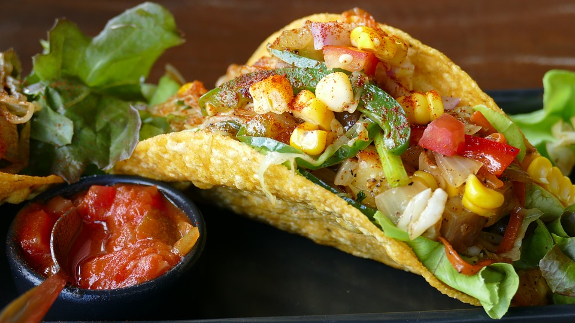

Vegan Tacos

For these recipe you need:
- 1 teaspoon vegetable oil.
- 1/2 onion, sliced.
- 2 teaspoons chopped seeded jalapeño chile.
- 1 12-ounce package soy chorizo (sometimes labeled Soyrizo), casing removed.
- 1 15.4-ounce to 16-ounce can vegetarian refried black beans.
- 12 corn tortillas, warm.
- Diced onion.
- Chopped fresh cilantro.
Did you buy all the ingredients? Then follow these steps:
- Heat oil in large nonstick skillet over medium heat. Add sliced onion and jalapeño;
sauté until tender, about 10 minutes. Add soy chorizo and cook until beginning to brown in spots,
stirring often, about 5 minutes.
- Meanwhile, cook beans in heavy small saucepan over low heat until heated through, stirring occasionally.
- Stack 2 warm tortillas for each of 6 tacos. Spread scant 2 tablespoons beans over each stack.
Top with soy chorizo mixture, dividing equally. Sprinkle with diced onion and cilantro.